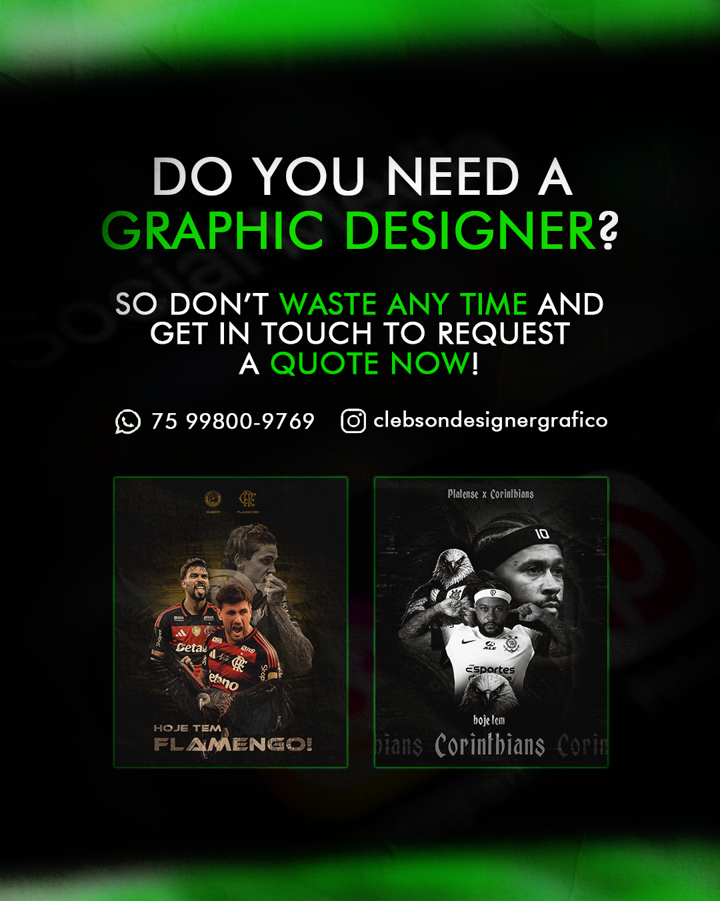

Freelance Graphic Designer – Professional Social Media, Logo Vectorization & Business Card Design
If you are looking to hire a professional freelance graphic designer to elevate your brand's visual identity, I offer specialized design services for businesses, content creators, and agencies worldwide. I develop custom, high-converting social media posts, high-quality logo vectorization, and premium business card designs focused on authority, engagement, and brand growth.

In today's digital landscape, having a cohesive brand identity across platforms like Instagram, Facebook, LinkedIn, and YouTube is crucial. Investing in professional graphic design services helps your business stand out, build trust with your audience, increase engagement, and drive sales organically.
Social Media Design Services & Instagram Content Creation
Social media channels are the storefront of your business. I design high-impact graphics tailored for Instagram (Feed and Stories), Facebook, X (Twitter), and LinkedIn, ensuring premium visual quality, clean layouts, and strategic information hierarchy.
From promotional flyers and carousel posts to event announcements and daily brand content, every graphic is crafted to grab attention instantly in the user's feed, boosting your profile's engagement and reach.
Professional Logo Vectorization & Redraw Services
Do you have a low-resolution logo or a blurry image that needs to be resized for printing or large displays? I provide professional logo vectorization services, manually tracing and converting your raster images (JPEG/PNG) into high-quality, scalable vector formats (AI, EPS, PDF, SVG).
Vectorizing your logo ensures it remains perfectly sharp and pixel-free at any size—whether you are printing it on a tiny business card, clothing, or a giant outdoor billboard. You will receive fully editable, print-ready, high-resolution source files.
Premium Business Card Design & Corporate Identity
A business card is often the first tangible impression a client gets of your company. I create elegant, modern, and bespoke business card designs aligned with your corporate identity.
Whether you prefer a minimalist look or a bold, creative concept, your business card will be delivered in print-ready formats with proper bleed settings, ready to send to any local or online printing service.
My Core Graphic Design Services
The main digital and print design solutions I provide include:
- Custom Instagram Feed Posts & Carousel Design
- High-Converting Instagram Stories Templates
- Professional Logo Vectorization & Redrawing
- Premium Business Card Layouts (Print-Ready)
- Digital Promotional Flyers & Banners
- YouTube Channel Art & Banners
- Corporate Identity & Graphic Assets
Every project is delivered in high definition with a strong focus on pixel-perfection, clean typography, and fast turnaround times.
How the Design Process Works
1. Project Briefing & Information Gathering
You share your project details, branding guidelines, text content, logos, color preferences, and visual references via email, social media, or WhatsApp.
2. Visual Concept & Layout Design
I organize your assets strategically to create modern layouts designed to catch your target audience's eye and convey professionalism.
3. Review & Feedback Rounds
I present the drafts for your review. We work closely to refine the shapes, colors, and details until the design perfectly matches your vision.
4. Final Delivery of High-Res Files
Once approved, I deliver the final files in high resolution and optimized formats (PNG, JPEG, PDF, Vector AI/EPS), fully ready for digital publishing or printing.
Frequently Asked Questions (FAQ) – Graphic Design Freelancer
What files do I get with the logo vectorization service?
You will receive fully scalable and editable vector source files (AI, EPS, SVG, and print-ready PDF), along with transparent background PNG files in high definition.
Can I request a monthly package for social media design?
Yes. I offer custom monthly design retainers for businesses that need a consistent flow of professional Instagram posts and stories to keep their feed active and engaging.
Are the business card designs ready for printing?
Absolutely. All business card layouts are delivered in CMYK color mode with high-resolution (300 DPI) PDF settings, including standard margins and bleeds required by print shops.
What information do I need to send to start a project?
Please provide your text content, logo (if available), preferred color palette, desired sizes/platforms, and any design examples or styles you like.
Do you work with clients outside of Brazil?
Yes, I work remotely with clients worldwide. Communication can be easily handled via email or WhatsApp, and final assets are delivered digitally.
Hire a Freelance Graphic Designer: Request a Free Quote Today
If you are ready to take your brand's visuals to the next level with professional social media posts, premium business cards, or flawless vector graphics, get in touch today to discuss your project and get a custom quote.
Learn more about my professional portfolio on my main page: Clebson Designer
Check out other specialized design sectors I work with: Fast-Food Graphic Designer and Sports Graphic Designer